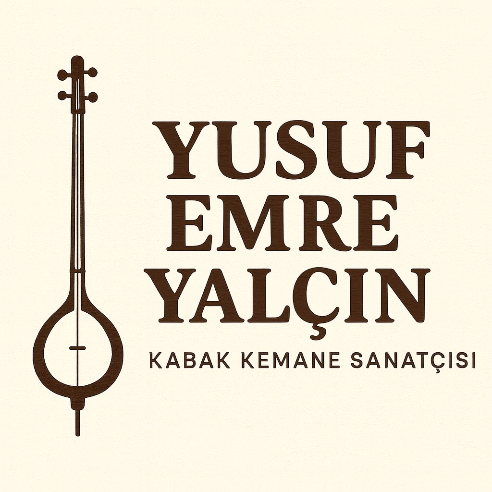

Foto Galeri

.jpeg)





Antalya doğumlu genç Türk kabak kemane ve ıklık sanatçısı. Türk halk müziğini modern yorumlarla genç kuşağa taşıyor.
TRT program videosu (YouTube).
TRT 1 program sayfası üzerinden bölüm bilgisi ve yayın detayı.
TRT 1 sayfasını aç →TRT Dinle üzerinden TRT radyo yayınları ve program sayfaları.
TRT Dinle sayfasını aç → Google arama sonucu (kanıt için) →TRT Antalya THM Çocuk ve Gençlik Koroları yıl sonu konseri hakkında haber bağlantısı.
Haberi aç →Korkuteli geleneksel güreş ve şenlikleri hakkında haber.
Haberi oku →Korkuteli etkinlikleri ve şenlikler hakkında haber.
Haberi oku →Antalya AKS’de müzik dinletisi hakkında haber.
Haberi oku →Bu videoda Yusuf Emre Yalçın, usta müzisyen Uğur Önür ile birlikte sahnede kabak kemane performansı sergilemektedir.
Videoyu aç →Seçili YouTube videoları ve sosyal medya bağlantıları.

Yusuf Emre Yalçın, 2005 yılında Antalya’da doğan genç bir kabak kemane ve ıklık sanatçısıdır. Küçük yaşlardan itibaren müziğe ve özellikle Türk halk ezgilerine ilgi duymaya başlamıştır. Kabak kemane ile sahne tecrübesini geliştirmekte, aynı zamanda ıklık performanslarıyla da dikkat çekmektedir.